//图 1 文件头内容
//--------------------------------------------------------------
// (C) COPYRIGHT 2020-2023 Sophgo Technologies Inc.
// ALL RIGHTS RESERVED
//
// Filename : <file_name>.v
// Author : <author_name> (name@sophgo.com)
// Created : <time>
// Description:
// 1) ...
// 2) ...
//
// History :
// 2022.02.08, <author1>, initial version
// 2022.04.07, <author2>, optimization for block ...
//--------------------------------------------------------------
c) Description部分可以概要描述模块的功能和设计思路、与外部连接的示意以及使用模块的注意事项等内容。History部分描述历史修改信息，列出修改的时间、作者和主要修改内容。
d) 文件头必须包含作者名。
文件和模块命名。
a) 一个.v文件包含最多一个module, 并且文件名与module name同名。[S]
b) module命名都采用小写，但 Vendor IP的module命名可以保留大写。[S]
信号命名。
a) 要非常重视信号的命名，信号取完名字后，代码也就基本写完了。
b) 信号命名要直观、简洁、有含义。使用有具体含义的名称便于阅读。
c) 命名中不同含义可分段，每一小段之间使用下划线“_”来分隔。
d) 信号名称不宜过长，不超过30字符。[S]
e) 命名中只允许出现字母数字和下划线。
f) 命名必需字母开头。
g) 模块端口、信号的所有字母小写。[S]
h) 信号命名中不使用任何保留字。
i) 命名不能只通过大小写来区分。
j) 定义多bit总线使用降序[N-1:0]。
k) 信号命名建议采用缩写方式。[S]
常用的信号缩写见下表,表 1 信号缩写定义表：
| 全称 | 缩写 | 说明 |
|---|---|---|
| acknowledge | ack | 应答 |
| address | addr | 地址 |
| arbiter | arb | 仲裁 |
| check | chk | 校验，如CRC校验 |
| clock | clk | 时钟 |
| clear | clr | 清除 |
| configuration | cfg | 配置 |
| control | ctrl | 控制 |
| count | cnt | 计数 |
| current | cur | 当前的 |
| data in | din | 数据输入 |
| data out | dout | 数据输出 |
| write data | wdat | 写数据 |
| read data | rdat | 读数据 |
| decode | dec | 译码 |
| delay | dly | 延迟 |
| disable | dis | 不使能 |
| error | err | 错误（指示） |
| enable | en | 使能 |
| frame | frm | 帧 |
| generate | gen | 生成，如CRC生成 |
| grant | gnt | 申请通过 |
| increase | inc | 加一 |
| interrupt | intr | 中断 |
| length | len | （帧、包）长 |
| memory | mem | 内存、存储 |
| output | out(o) | 输出 |
| priority | pri | 优先级 |
| pointer | ptr | 指针 |
| rd enable | ren | 读使能 |
| read | rd | 读（操作） |
| read enable | ren (rden) | 读操作 |
| ready | rdy | 应答信号或准备好 |
| receive | rx | 接收 |
| register | reg | 寄存器 |
| request | req | 请求 |
| reset | rst | 复位 |
| segment | seg | 片段 |
| source | src | 源（端口） |
| timer | tmr | 定时器 |
| temporary | tmp | 临时 |
| transmit | tx | 发送 |
| valid | vld | 有效信号 |
| write | wr | 写操作 |
| write enable | wen (wren) | 写使能 |
| left | lft | 左侧 |
| right | rht | 右侧 |
| top | top | 上方 |
| bottm | bot | 下方 |
l) start、end信号不用缩写。start和end一般是pulse信号，而不是电平信号。
m) 特定作用的信号添加后缀表明其作用。[S]
常用后缀命名方式见下表,表 2 常用信号后缀表。
| 全称 | 后缀 | 说明 |
|---|---|---|
| active low | _n | 低有效 |
| clock | _clk | 时钟信号 |
| enable | _en | 开启使能 |
| disable | _dis | 关闭功能 |
| select | _sel | 选择 |
| chip enable | _ce | 片选 |
| flag | _flg | 标志位 |
| delay | _dly | 延迟 |
| receive | _rx | 接收 |
| transmit | _tx | 发送 |
n) 打拍的寄存一般加_r后缀。为了说明某个寄存器xx的前一拍，可以用xx_d表示，这里_d表示寄存器的d端。
//图 2宏定义示例图
`define TSMC16LL
`define USE LIB CELL
`define CORE NUM 10
b) 有几个define是仿真常用的，只供仿真，综合不能打开：
`define SIMULATION-- 仿真专用开关
`define EMULATOR-- 帕拉丁仿真专用
`define BEHAVIORAL-- 行为级模型
`define FAST_SIM-- 快速仿真模型
c) 宏允许带参数，参数可以小写，要求所有参数都要小括号括起来。如下示例：
//图 3宏参数写法示意
`define IDX(x)((x)+1)*(32)-1):((x)(32)
`define BYTE_IDX(x)(((x)+1)*(8)-1):((x)*(8)))
d) 参数定义中所有字母大写。如下示例：
//图 4 参数定义示意
parameter DAT WIDTH =32 ;
parameter ADR WIDTH =10;
e) 端口信号为结构体时，需要区分数据类型名称和端口名称：
input/output pkg_name::struct_name io_name
在以上的显式定义中，io_name和struct_name要进行区分，否则即使回归可以正常pass，但在进行综合时会导致编译失败。
//图 5 模块声明接口示意
module module_example #(
parameter DATW = 32, // data width
parameter ADRW = 20 // address width
) (
input clk, // clock 500MHz
input rst_n, // reset active low @ clk domain
input [DATW-1:0] xx2yy_din, // data in from ..
input [ADRW-1:0] xx2yy_addr, // @ address
output reg [DATW-1:0] xx2yy_dout0, // data out to yy
output reg [DATW-1:0] xx2zz_dout1 // data out to zz
);
localparam LCDW = 32; // Local data width
//图 6 模块例化端口映射示意
module_xx #(
.DATW (64), // data width
.ADRW (20) // address width
) u_module_xx (
.clk (clk), // clock 500MHz
.rst_n (rst_n), // reset active low @ clk domain
.xx2yy_din (xx2yy_din), // data in from ..
.xx2yy_addr (xx2yy_addr), // address
.xx2yy_dout (xx2yy_dout) // data out to yy
);
//图 7 模块例化无连接接口示例
module_xx u_module_xx (
.clk (clk), // clock 500MHz
.rst_n (rst_n), // reset active low @ clk domain
.xx2yy_din (xx2yy_din), // data in from ..
.xx2yy_addr (xx2yy_addr), // address
.xx2yy_dout0 (xx2yy_dout), // data0 out to yy
.xx2yy_dout1 (), // data1 out to yy
.xx2yy_dout2 () // data2 out to yy
);
//图 8 模块例化进行逻辑操作示意
module_example u_module_example (
.clk (clk),
.rst_n (rst_n),
.eg_ctrl (eg_ctrl & eg_en), // 注意：此处为组合逻辑表达式
.eg_addr (eg_addr),
.eg_dout (eg_dout)
);
// 而非 /* */。[S]/* 后会导致后续不需要注释的行也被标记为注释，可能会引起不必要的错误。 `ifdef, `else `endif 必须有注释说明在哪里使用、并解释这个指令的用法。[S]//图 9 always块错误写法示例
always @(posedge clk or negedge rst_n) begin
if (~rst_n) begin
dat_r1 <= 32'd0;
tmp_r1 <= 10'd0;
end else if (cond3) begin
if (cond1) begin
dat_r1 <= logic1;
end
if (cond2) begin
tmp_r1 <= logic2;
end
end
end
//图 10 always块错误写法示意
always @(posedge clk or negedge rst_n) begin
if (~rst) out <= 32'd0;
if (sel0) out <= in0;
if (sel1) out <= in1;
if (sel2) out <= in2;
end
always @(*)方式避免遗漏**[S]**。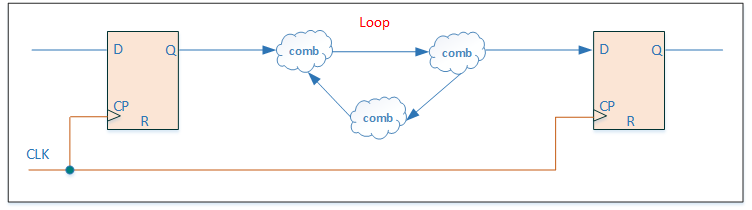
图 11 组合逻辑loop回路示例
a) 如果确实需要有意设计成组合逻辑loop，需要在SPEC中详细说明。例如有一个特例是process_monitor中存在回路，用于测试。确实需要loop时，代码实现时用SIMULATION的宏，里面加上延时，并仅用于仿真，防止仿真卡死。
9) 谨慎使用Latch。[S]
a) 如确需要用到，须清楚地分析相关电路的时序以及毛刺带来的影响，并在SPEC中做详细说明。例如在top的IO逻辑中，会用到锁存器，防止TEST来后信号跳变。如下示例为产生latch的常规写法。
//图 12 产生latch的常规写法
always @(test_enable or di_bi)
if (!test_enable) begin
bi_latch = di_bi;
end
//图 13 产生固定值锁存器写法示意
always @(cond) begin
if (cond) test_d = 1'b1;
end
//图 14 产生Latch写法一
always @(*) begin
case (cond)
2'b01 : test_d = 2'b11;
2'b10 : test_d = 2'b10;
endcase
end
//图 15 产生Latch写法二
always @(*) begin
if (cond1) begin
test_d = data_a;
end else if (cond2) begin
test_d = data_b;
end
end
b) 采用下面4种写法可避免产生Latch：
//图 16 避免产生Latch写法一
always @(*) begin
case (cond)
2'b01 : test_d = 2'b11;
2'b10 : test_d = 2'b10;
default : test_d = 2'b00;
endcase
end
//图 17 避免产生Latch写法二
always @(*) begin
test_d = 2'b00;
case (cond)
2'b01 : test_d = 2'b11;
2'b10 : test_d = 2'b10;
endcase
end
//图 18 避免产生Latch写法三
always @(*) begin
if (cond1) begin
test_d = data_a;
end else if (cond2) begin
test_d = data_b;
end else begin
test_d = 8'd0;
end
end
//图 19 避免产生Latch写法四
always @(*) begin
test_d = 8'd0;
if (cond1) begin
test_d = data_a;
end else if (cond2) begin
test_d = data_b;
end
end
//图 20 工具不会插入clock gate写法示意
always @(posedge clk or negedge rst_n) begin
if (~rst_n) begin
dat_reg <= 32'd0;
end else begin
dat_reg <= din;
end
end
//图 21 工具会插入clock gate写法示意
always @(posedge clk or negedge rst_n) begin
if (~rst_n) begin
dat_reg <= 32'd0;
end else if (din_vld) begin
dat_reg <= din;
end
end
//图 22 else 赋值冗余写法示意
always @(posedge clk or negedge rst_n) begin
if (~rst_n) begin
dat_r1 <= 32'd0;
end else if (cond) begin
dat_r1 <= data_a;
end else begin //红框
dat_r1 <= dat_r1; //红框
end //红框
end
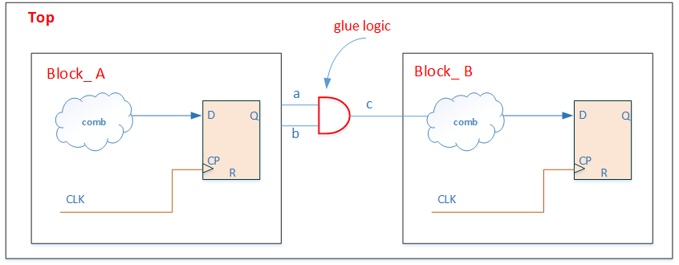
//图 24 例化模块信号中包含表达式错误示例
module_example u_module_example (
.clk ( clk ),
.rst_n ( rst_n ),
.eg_ctrl ( eg_ctrl & eg_en ),//红框
.eg_addr ( eg_addr ),
.eg_dout ( eg_dout )
);
模块的输出尽量使用寄存输出。[S]
例化harden的模块或IP时，不能传入parameter。
inout双向端口只允许在芯片顶层和IO模块中定义及使用。[S]
芯片内部避免使用三态逻辑和三态buffer。[S]
a) 特例：FPGA 的双向IO是可以用三态buffer的。
在例化模块时不能出现将"Z"状态赋值到端口中。
a) 下面示例是不建议的做法：
//图 25 例化时含有"Z"的不规范写法示例
bufifo s2(dout1, 1'bz, en);
//图 26 Function out错误赋值示例
module test_f(in, out);
function val;
input in;
out = in;
endfunction
endmodule
//图 27 Function输出函数值存在某些bit未赋值示例
function [15:0] f_val;
......
f_val[7:0] = inp;
endfunction
 图 27 Function输出函数值存在某些bit未赋值示例
//图 28 function条件语句不完全示例
function func;
input sel;
if (sel)
func = 1'b0;
endfunction
//图 29 function条件语句正确写法示例
function func;
input sel;
if (sel)
func = 1'b0;
else
func = 1'b1;
endfunction
//图 30 多比特运算不建议写法示例
reg [3:0] r;
assign s = !r;
//图 31 数组索引使用表达式错误写法示例
wire [4:0] array [7:0];
wire [2:0] idx;
wire [4:0] mux_d;
assign mux_d = array[idx + 1];
// 图 32 generate块命名示例
genvar i;
generate
for (i = 0; i < `CORE_NUM; i = i + 1) begin : CORE_GEN
...
end
endgenerate
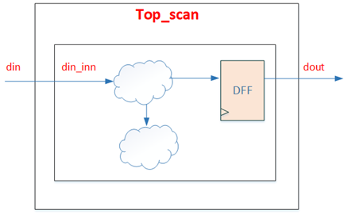
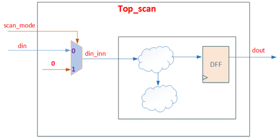
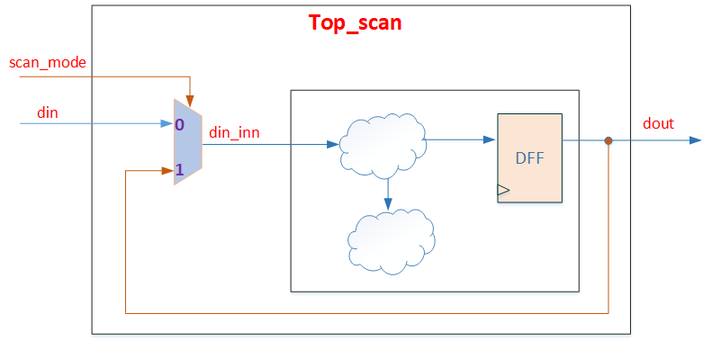
// 图 36 逻辑繁冗写法示例
always @(posedge clk or negedge rst_n) begin
if (~rst_n) begin
ctrl <= 1'b0;
end else if (cond1) begin
if (cond2) begin
ctrl <= 1'b1;
end
end else if (cond3) begin
ctrl <= 1'b0;
end
end
// 图 37 逻辑清晰写法示例
always @(posedge clk or negedge rst_n)
if (~rst_n)
sig_r <= 1'b0;
else if (sig)
sig_r <= 1'b1;
else
sig_r <= 1'b0;
end
c) 下面"打拍"逻辑两者写法，后面的写法更清晰。
// 图 38 信号打拍的不规范写法示例
always @(posedge clk or negedge rst_n)
if (~rst_n)
sig_r <= 1'b0;
else if (sig)
sig_r <= 1'b1;
else
sig_r <= 1'b0;
end
// 图 39 信号打拍的规范写法示例
always @(posedge clk or negedge rst_n)
if (~rst_n)
sig_r <= 1'b0;
else
sig_r <= sig;
end
内部产生的时钟，需要在一个单独的模块中生成。
a) 如果要放在不同的模块中，则要在Design SPEC中进行详细说明。
每个模块的时钟信号应该从本模块的端口处得到。[S]
a) 下面clktmp时钟尽管是经过时序逻辑产生，但不是端口处获得，不推荐。这种产生时钟的逻辑需要在单独的时钟模块中处理。
// 图 40 clk不推荐写法示例
always@(posedge clk)
clktmp <= en;
always@(posedge clktmp)
b) 允许的特例为：内部用clock_gate产生新的时钟。
// 图 41 clk由内部模块组合逻辑产生错误示例
input clk1;
reg a;
reg clk2;
clk2 = clk1 & a;
always @(posedge clk2 or negedge rst_n)
// 图 42 clk当做数据赋值错误写法示
always@(posedge clk or negedge rst_n)
if(!rst_n) test <= 1'b0;
else test <= clk;
// 图 43 时钟管脚为固定值示例
DFF u0 (
.D (Din ),
.CP (1'b0 ),
.Q (Dout )
);
// 图 44 always中出现两个clk示例
always @(posedge clkl or negedge clk2 or negedge rst_n)
时钟通路上的cell必须为clock 专用cell。
a) 该项在综合和后端实现后的netlist需要进行 check。
Feedthrough的clock采用时钟反相器cell。
a) Feedthrough中的clock要用时钟cell，并且要用CKND，避免duty cycle问题。这一项在后端实现后也需要check。
手动插入的clock gate cell需要在Design SPEC中说明，并提出综合及布线的要求。
a) 手动插入的clock gate会影响到后端 clock tree方案，需要一起讨论决定。
复位结构尽量简单，内部产生的复位信号，在一个单独的模块中生成。[S]
避免在内部模块中使用组合逻辑生成复位信号。[S]
a) 这种方式产生的复位信号可能产生glitch，不能直接使用，而需要经过复位同步后使用。
寄存器采用异步复位方式。
寄存器复位信号应为低电平有效。[S]
a) 下面示例为高电平复位，不推荐。
// 图 45 高电平复位示例
always @(posedge clk or posedge rst_n)
if(rst_n)
dat_r <= 1'b0;
复位信号跨时钟域时，需要先做同步再使用。
复位信号跨时钟同步时，确保scan模式下scan复位信号可以bypass到内部复位。
a) 如下图示例，scan的复位为输入rst_n，在scan模式下，内部复位new_rst_n需要bypass为rst_n，防止scan模式无法复位内部寄存器。
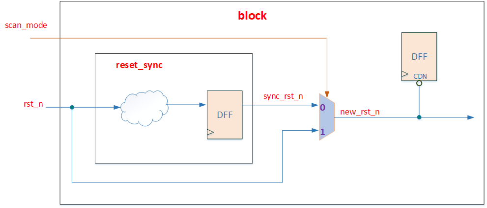
在一个always块中复位信号不要超过1个。
a) 下面示例出现两个reset，违反规则。
// 图 47 always块中出现两个reset示例
always @(posedge clk or negedge rst_n1 or negedge rst_n2)
// 图 48 复位触发与其极性不匹配示例
always @(posedge clk or negedge rst_n)
if (rst_n)
// 图 49 异步复与同步复位进行组合逻辑示例
always @(posedge clk or negedge async_rst) begin
if( ~async_rst | sync_rst )
...
end
// 图 50 组合逻辑存在复位示例
always @(*) begin
if(~rst_n) begin
test_d = 8'd0;
end
else if(cond1) begin
test_d = dat1;
end
else begin
test_d = 8'd0;
end
end
// 图 51 复位if逻辑后再使用if示例
always @(posedge clk or negedge rst_n)
if(~rst_n) begin
test_d <= 1'b0;
end
if(clr) begin
test_d <= 1'b0;
end
else if(vld) begin
test_d <= datin;
end
end
//图 52 寄存器复位值不是常量示例
always @(posedge clk or negedge rst_n)
if(~rst_n) begin
test_d <= data_init;
end
else if(clr) begin
test_d <= 1'b0;
end
else if(vld) begin
test_d <= datin;
end
end
// 图 53 多变量复位不完整示例
always @(posedge clk or negedge rst_n)
if(~rst_n) begin
dat1 <= 1'b0;
dat2 <= 1'b0;
end
else if(cond) begin
dat1 <= dat1_in;
dat2 <= dat2_in;
dat3 <= dat3_in;
end
end
// 图 54 位宽不匹配变量进行逻辑运算错误写法示例
reg [1:0] A;
reg [2:0] B;
always @(*)
if ( A < B )
...
//图 55 用“ ？”作常量匹配错误写法示例
reg [3:0] A;
always @(*)
if( A == 4'b1???);
...
//图 56 时钟为多比特信号错误写法示例
input[2:0]clock
always @ (posedge clock)
例化模块或调用函数时，信号位宽要匹配。
在同一操作中不能同时出现有符号数和无符号数。
a) 下面示例a为有符号数，b为无符号数，不能同时出现在同一操作中。
//图 57 有符号数和无符号数进行逻辑运算错误示例
reg signed [31:0] a;
reg [31:0] b;
assign c = a + b;
//图 58 if条件不存在满足情况示例
parameter P1 = 2;
parameter P2 = 1;
always @(*)
if( P1 < P2 )
...
//图 58 if条件不存在满足情况示例
if (in == 1'bx)
...
图 59 逻辑比较中出现“X”或“Z”示例
信号只能有一个驱动（三态除外）。
a) 芯片内部只有模拟IP的信号可能用到三态多驱动，如模拟MUX的output。
对于常数，需要指明位宽和进制（`d `h `b `o )，如8’d0。[S]
对于数据类型只能使用wire、reg、integer、genvar四种，且不可以为负数。
在if条件语句中，不要使用算术运算表达式。[S]
a) 下面示例if中有a-1的算术运算，不推荐。
//图 60 条件语句使用算术运算表达式示例
always @(*)
if ( a - 1 == b )
...
//图 61 复杂表达式不推荐写法示例
if (&a==1'b1&&!flag==1'b1||b==1'b1)
推荐写法：
//图 62 复杂表达式推荐写法示例
if (((&a == 1'b1) && (!flag == 1'b1)) || (b == 1'b1))
//图 63 复杂条件不推荐写法示例
if( a || b || c || d || e || f || g || h )
b) 可合并成如下，这种方式有利于提高验证conditional coverage。
//图 64 复杂表达式推荐写法示例
assign a_int1 = a || b || c || d;
assign a_int2 = e || f || g || h;
assign a_int3 = a_int1 || a_int2;
if( a_int3 )
//图 65 一行存在多个赋值表达式示例。
assign a=b+1;assign c=d;assign dout=a&e;
0~`CORE_NUM-1，采用assign语句译码得到match0-match3， 条件并不完备，没有覆盖到nonce_id>=`CORE_NUM的情况，容错性能低，当nonce_id超出范围后无法覆盖。//图 66 译码表达式的条件不完备示例
assign match0 = (nonce_id>='CORE_NUM*4*0) && (nonce_id<'CORE_NUM*4*1);
assign match1 = (nonce_id>='CORE_NUM*4*1) && (nonce_id<'CORE_NUM*4*2);
assign match2 = (nonce_id>='CORE_NUM*4*2) && (nonce_id<'CORE_NUM*4*3);
assign match3 = (nonce_id>='CORE_NUM*4*3) && (nonce_id<'CORE_NUM*4*4);
//图 67 译码表达式的条件完备示例
assign match0 = (nonce_id<'CORE_NUM/4*1);
assign match1 = (nonce_id>='CORE_NUM/4*1) && (nonce_id<'CORE_NUM/4*2);
assign match2 = (nonce_id>='CORE_NUM/4*2) && (nonce_id<'CORE_NUM/4*3);
assign match3 = (nonce_id>='CORE_NUM/4*3) ;
//图 68 抽取公共子表达式示例
assign x = a + b + c;
assign y = d + a + b;
assign z = a + b;
assign x = z + c;
assign y = d + z;
//图 69 一行定义多个变量示例
wire [N-1:0] signal1, signal2, signal3;
b) 改成如下每一行一个变量更为清晰。
//图 70 定义变量正确写法示例
wire [N-1:0] signal1;
wire [N-1:0] signal2;
wire [N-1:0] signal3;
信号需要显式定义。[S]
a) 没有显式定义的wire类型是当作1bit的，容易出错。
信号声明时不要赋值。
//图 71 信号声明存在赋值示例
reg temp = 1;
禁止在组合逻辑中使用非阻塞赋值。
禁止在时序逻辑中使用阻塞赋值。
禁止对同一个变量既使用阻塞赋值，又使用非阻塞赋值。
禁止同一个always块中既使用阻塞赋值，又使用非阻塞赋值。
定义多bit总线使用降序。
//图 72 定义多比特变量示例
reg [N-1:0] data;
//图 73 定义mem类型变量示例
reg [N-1:0] mem_array [0:M-1];
a) 深度部分用升序[0:M-1]，便于验证环境初始化mem的数据，读取txt文件第一行对应mem_array[0]，更为清晰。
避免局部变量名和全局变量名发生冲突。
禁止在赋值语句中出现”X” / ”Z” 。
谨慎使用for循环。[S]
避免出现不确定的for循环的初始值。
a) 下面示例r初始值不确定，违反规则。
//图 74 for循环初始值不确定示例
reg [7:0] r;
for (r[6:1] = 0; r <10; r=r+1)
for (r[0] = 0; r <10; r=r+1)
//图 75 for循环step不确定示例
reg [7:0] r;
for (r = 0; r <10; r[2:0]=r+1)
//图 76 循环过程中对index进行修改示例
for(i=0;i<8;i=i+1)
i=i+2;
//图 77 for循环条件范围出现变量示例
for(integer i = 0; i != a; i = i+1)
...
要求for循环中条件的初始值是可以计算的。也就是禁止for循环中条件初始值中出现变量。
禁止使用casex语句。
建议不要使用casez语句。[S]
建议使用case语句来代替没有优先级要求的嵌套if语句。[S]
case语句中的default分支放在最后一行。
建议case语句的条件都是常量。
a) 下面示例case分支存在c+d表达式，不推荐。
//图 78 case语句分支条件存在变量示例
always @(posedge clk)
case(a)
2'b00 : b <= 0;
2'b01 : b <= 1;
c+d : b <= 0;
endcase
//图 79 case语句选择条件为常量示例
reg [2:0] encode;
reg [2:0] dout;
always @(*)
case (1)
encode[2] : dout = 3'b100;
encode[1] : dout = 3'b010;
encode[0] : dout = 3'b001;
default : dout = 3'b000;
endcase
b) 上面语句逻辑功能同下：
//图 80 case语句示例对比
always @(*)
if(encode[2])
dout = 3'b100;
else if(encode[1])
dout = 3'b010;
else if(encode[0])
dout = 3'b001;
else
dout = 3'b000;
//图 81 case default对比写法示例
always @(*) begin
case(cond)
3'b000 : dout = 1'b0;
3'b001 : dout = 1'b0;
3'b010 : dout = 1'b0;
3'b011 : dout = 1'b1;
3'b100 : dout = 1'b0;
3'b101 : dout = 1'b1;
3'b110 : dout = 1'b1;
default : dout = 1'b1;
endcase
end
always @(*) begin
case(cond)
3'b000 : dout = 1'b0;
3'b001 : dout = 1'b0;
3'b010 : dout = 1'b0;
3'b100 : dout = 1'b0;
default : dout = 1'b1;
endcase
end
ifdef SIMULATION … endif 段落嵌入，避免仿真语句被综合。综合的filelist中不可define SIMULATION，此define仅用于仿真。//图 82 避免仿真语句被综合示例一
`ifdef SIMULATION
always @(*) begin
if( a_hit & b_hit)
$display ("Error! mem access conflict! ")
end
`endif
c) 此时建议采用下面时序逻辑监测conflict，避免误判。
图 83 避免仿真语句被综合示例二
`ifdef SIMULATION
always @(posedge clk) begin
if( a_hit & b_hit)
$display ("Error! mem access conflict! ")
end
`endif
//synopsys async_set_reset “reset”
b) 这个规则有一个例外就是编译开关的打开和关闭可以嵌入到代码中。例如：
//synopsys translate_off
//synopsys translate_on
信号必需显式定义。
a) 没有显式定义的wire类型是当作1bit的，容易出错。
不允许使用"===" 或者"!=="操作符。
function中不能包含时序逻辑。
不允许使用“.”的方式调用其他层级信号。
a) 下面示例调用submodule下的data_in信号是违规的。
//图 84 使用“.”调用其他层级信号示例
assign data_out = submodule.data_in;
//图 85 delay使用示例
assign #2 dout = din & sel;
always #2 dout = din;
always dout = #2 din;
always @(posedge clk)
dout <= #1 din;
不允许使用除法（/）或者取模（%）的运算符直接对变量进行除法和取模运算。
a) 除法和取模运算需要专门进行设计，否则综合的电路效果很差。
原则上用不到乘法器和除法器。逻辑设计中，乘法器和除法器资源开销大，往往可以用其他方式优化实现。
不允许在敏感列表中出现同一个信号的双沿。
a) 下面示例一个always块既用clk的上升沿又用clk下降沿，违反规则。
//图 86 always敏感列表中出现双沿示例
always @ (posedge clk or negedge clk)
//图 87 移位值是变量示例
input [7:0] data_in;
input [2:0] shift_a;
wire [7:0] data_out;
assign data_out = (data_in << shift_a);
状态机（FSM）采用两段式写法，即将状态机的描述分成两个always块，一个为组合逻辑得到nxt_state和状态机输出，一个为时序逻辑得到cur_state。
要求状态机有默认状态。
a) 必须使用default条件为状态机指定一个默认的状态，防止状态机进入死锁状态。
要求状态机的状态命名和编码要求：
a) 状态命名使用ST_前缀。
b) 在FSM输出逻辑较多时，状态编码建议使用独热码。独热码的编码方式可以让状态机输出逻辑的面积和时序更优。
c) 状态命名使用localparam，而不是parameter，是防止被外部例化时修改。
d) 状态名只会在两段式的always块中出现，理论上不会再出现于其他逻辑中。
要求状态机的状态数不能过多，控制在40个以内。[S]
a) 状态数要合理，去除不必要的状态。
状态机的代码示例。
//图 88 状态机代码示例
localparam ST_IDLE = 3'b001;
localparam ST_PROCESS = 3'b010;
localparam ST_END = 3'b100;
reg [2:0] cur_state;
reg [2:0] nxt_state;
reg process_en;
always @(posedge clk or negedge rst_n)
if(~rst_n)
cur_state <= 3'd0;
else
cur_state <= nxt_state;
always @(*) begin
nxt_state = cur_state;
process_en = 1'b0;
case(cur_state)
ST_IDLE: begin
if(start)
nxt_state = ST_PROCESS;
else
nxt_state = ST_IDLE;
end
ST_PROCESS: begin
nxt_state = ST_END;
process_en = 1'b1;
end
ST_END: begin
nxt_state = ST_IDLE;
end
default: nxt_state = ST_IDLE;
endcase
end
跨时钟域逻辑（异步逻辑）在处理上很容易出现隐患，因而在电路设计中要尤其重视。涉及异步处理的逻辑必须在SPEC中独立成章节（异步处理章节），进行详细说明，并要画出电路结构图和波形示意，方便review。
对于设置multicycle约束的电路，也需要当作异步进行处理，在SPEC的异步处理章节中进行详细描述。
下列描述跨时钟域的逻辑规范，实际项目中必须使用common ip来实现同步操作，禁止手动写代码实现（例如两级寄存器必须使用common_sync，不能通过写rtl打两拍）。
a) 单比特控制信号跨时钟域的时候，至少使用两级寄存器同步之后使用。
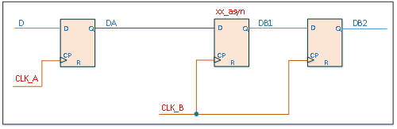
图 89 单bit信号跨时钟域同步
b) 跨时钟域第一级打拍的寄存器名称后缀为“_asyn”, 这样对编写约束和后仿真都比较方便。需要注意的是，这种跨时钟域电路目的是为了消除亚稳态影响，数据能否正确传输或采样，需要设计者根据实际情况来保证。
c) 多比特数据信号跨时钟域的时候，必须在数据稳定后进行采样。这里多比特数据信号，特指可能存在多比特同时变化的数据信号，在跨时钟域时，就必须在数据稳定后进行采样。如果可以保证多比特数据信号只有单个比特发生变化，例如counter经过格雷码变化后的信号，则可以直接采样。
d) 常用的多比特数据信号跨时钟域如下示例，是多比特数据信号dat_a（clka时钟域下）采样到另一个时钟域clkb下的常用处理方式，在tog_b_pulse有效时，dat_a必须是稳定有效的数据。数据带宽较高的多比特数据跨时钟域，可采用common的异步FIFO进行处理。
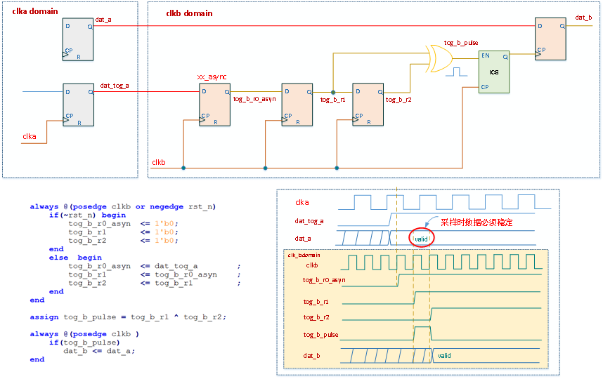
图 90 多bit信号跨时钟域同步
// 图 90 多bit信号跨时钟域同步,代码部分
always @(posedge clk or negedge rst_n) begin
if(~rst_n) begin
tog_b_r0_asyn <= 1'b0;
tog_b_r1 <= 1'b0;
tog_b_r2 <= 1'b0;
end else begin
tog_b_r0_asyn <= dat_tog_a;
tog_b_r1 <= tog_b_r0_asyn;
tog_b_r2 <= tog_b_r1;
end
end
assign tog_b_pulse = tog_b_r1 ^ tog_b_r2;
always @(posedge clk)
dat_b <= dat_a;
e) 不允许组合逻辑输出的信号跨时钟域输出。不允许组合逻辑输出的信号跨时钟域，也就是跨时钟域的信号需要寄存器输出，避免出现glitch。示例如下，DB的毛刺可能被CLKB采到，在DB2出现不符合预期的脉冲。
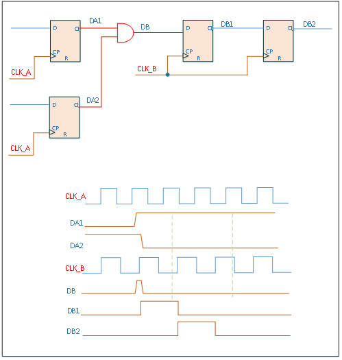
图 91 跨时钟域时使用组合逻辑引起毛刺的示例
f) 有时序对齐要求的操作需要在跨时钟域之前完成。上一条规则的案例DB出现了毛刺，是因为DA1和DA2有时序对齐的要求，改成如下电路，在跨时钟域前完成“DA1 & DA2”则不会出问题。
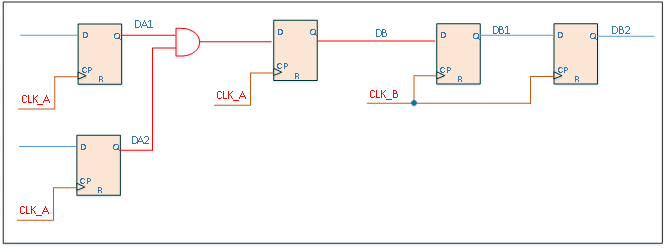
图 92 避免组合逻辑跨时钟域示例
另外，举例如下面电路，EN1和EN2都是从同一个信号D打拍过来，但在CLKB时钟域下，EN1和EN2就不再是对齐的。
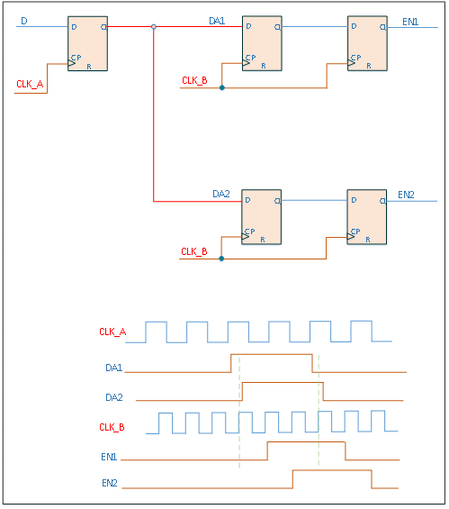
图 93 跨时钟域导致信号不对齐示例
g) 不能使用多个异步fifo来拼接成一个更宽的fifo。是上一条规则的延伸，经过异步fifo后，数据不再是对齐的，会导致拼接数据出错。
h) 复位异步FIFO时，需要在两个时钟域下都要进行复位。例如“写”时钟域复位后，“读”时钟域也要进行复位后再使用FIFO，否则异步FIFO内部读写指针将错乱，导致功能出错。常见错误：对其中一个时钟域进行软复位后，另一个时钟域没有复位导致出错。
b) 复位信号同步器。
通常在对时序电路进行复位时建议使用异步复位，但是异步复位会带来亚稳态的问题，通过异步复位同步释放模块可以改善这个问题。
文件路径：/ic/work/fe/common_ip/common_reset_sync。
c) 脉冲同步。
从某个时钟域取出一个脉冲，然后在新的时钟域中建立另一个单时钟宽度的脉冲。
文件路径：/ic/work/fe/common_ip/common_pulse_sync。
d) 异步FIFO。
数据信号不存在依次变化的特性，格雷码对此类数据无效，因此采用异步FIFO、握手协议或者用使能信号控制这样的方式来进行数据的传输。
文件路径：/ic/work/fe/common_ip/common_async_fifo。
另外，core返回nonce建议采用专用异步FIFO—gn_fifo实现，其跨时钟域采用双向握手机制实现。
文件路径：/ic/work/fe/common_ip/gn_fifo。
e) 时钟切换。
时钟切换要防止出现毛刺。
文件路径：/ic/work/fe/common_ip/common_clkmux。
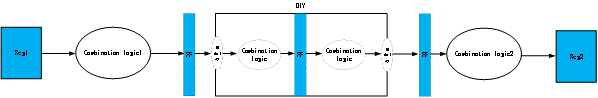
图 94 除法器例化示意图
SRAM的模块命名要和功能应用解耦。
a) SRAM命名可以包含类型、深度、位宽等基本信息，而没必要包含SRAM的具体应用信息。例如深度为128、位宽为32bit的单口SRAM可以取名为 sram_sp_128x32。不同的功能可以使用相同的SRAM模块。
SRAM的读使能信号不能置为常值。
a) SRAM读使能如果一直有效，会浪费power，并且会导致输出data随address变化，给仿真验证带来干扰。
SRAM没有必要都放在顶层。SRAM的接口跟调用位置无关，遵循代码规范即可。
尽量使用单口SRAM，原则上双口SRAM都可以用单口SRAM代替。
不同Memory Compiler生成的SRAM，使能信号的极性可能不一样，需要谨慎。
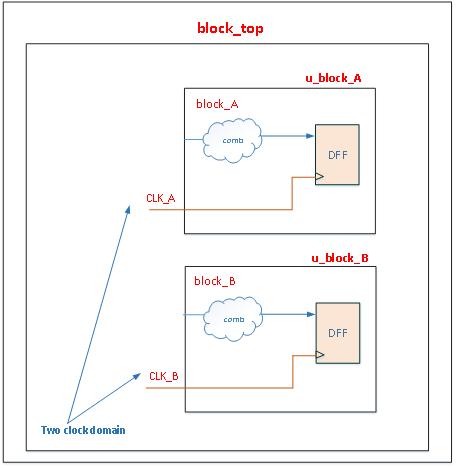
图 95 按时钟域划分模块示例
如果两个异步时钟有数据交互，跨时钟域逻辑放在一个独立模块。[S]
这有利于单独处理跨时钟域电路，也使得代码review更加容易。
时钟和复位generator分别在独立的模块实现。
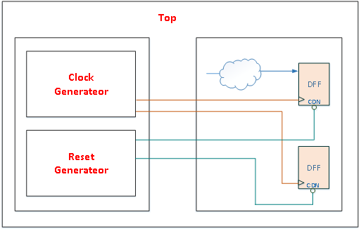
图 96 时钟与复位划分示例
保持相关的组合逻辑在同一个模块中。这有利于综合工具对逻辑的优化，也有利于时序预算和快速仿真。
对不同设计目标的电路分成不同的模块。[S]
a) 将含有关键路径的逻辑和非关键路径的逻辑分成不同的模块，以便综合工具对关键路径采用速度优化，对非关键路径采用面积优化。
IO PAD放在独立的模块。
每个独立模块的输出信号，采用寄存器输出。[S]
模块划分要兼顾模块逻辑大小。[S]
a) 单独harden的模块一般控制在100万个instance为佳， 这样EDA工具run time可控。
顶层模块只负责连线，避免出现 glue logic。
a) 避免出现类似下图的glue logic。顶层模块集成时，相邻的harden block 之间只有IO一一相连，不能有其他任何cell，包括standard cell、TIE cell等。
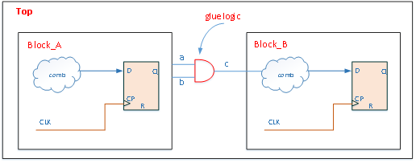
图 97 glue logic示例
b) 单独harden的模块，如有信号要输出到其他多个模块，需要将信号对应输出多路，每个模块单独对应一路。如下面示例，block_A、block_B、block_C都是单独harden的，block_A要输出cnn给block_B和block_C，如果只输出一个信号cnn，那么Top集成时，需要将cnn同时连接到block_B和block_C，后端很难处理。
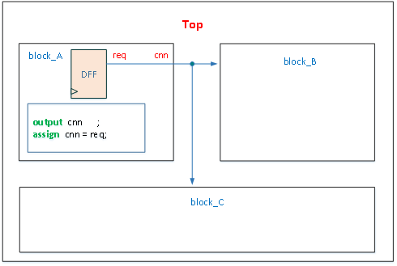
图 98 harden的模块之间不当的连线方式示例
c) 合理的做法是：block_A输出2个信号cnn_b和cnn_c，分别连接到block_B和block_C，如下图所示。
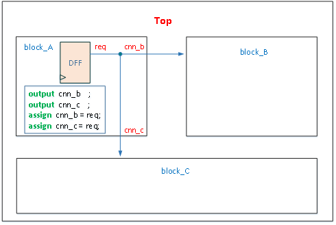
图 99 harden的模块之间推荐的连线方式示例